Call Auburn Appliance Repair Pros To Talk With Someone Immediately!
CALL NOW (530) 447-8105Appliance issues can throw a wrench in your day, but there’s no need to stress! Whether your refrigerator isn’t cooling, your dishwasher won’t drain, or your oven refuses to heat, you need an appliance repair company in Auburn and help is just a phone call away. Auburn Appliance Repair Pros is here to connect you with skilled appliance repair technicians in Auburn who can get your home’s appliances back on track.
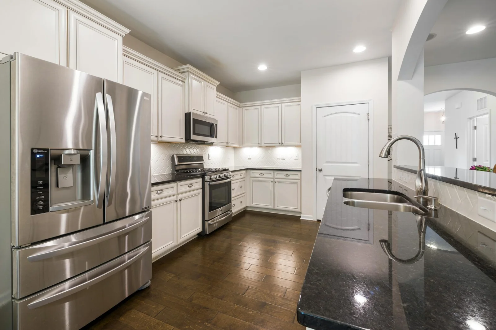
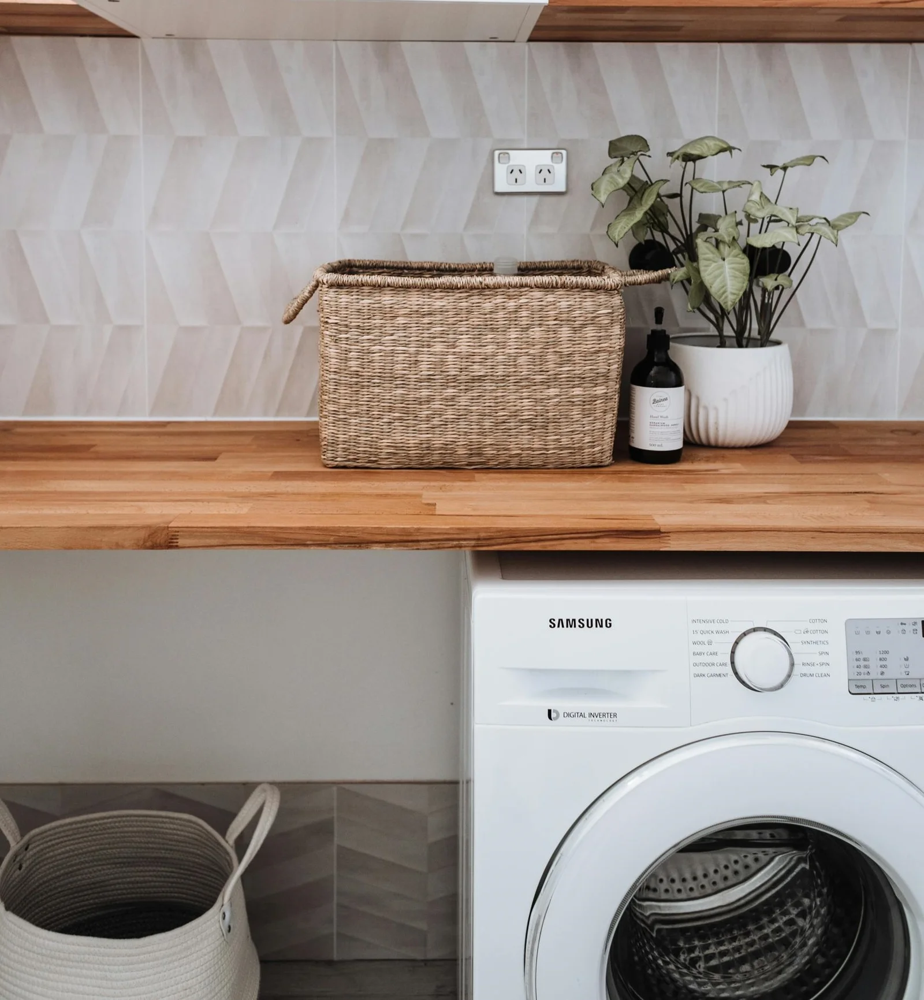
When an appliance breaks down, it can be frustrating and a time-suck. Ignoring the issue could
lead to further damage and even more expensive repairs. That’s why it’s important to get a
professional assessment as soon as possible. With the right help from one of our appliance
repair companies in Auburn, your appliances can be restored quickly, ensuring your daily
routine
isn’t impacted.
Our goal is to make your process of finding a reliable appliance repair technician in Auburn as
easy as possible. No more searching endlessly online or dealing with unreliable service
providers—when you reach out, we’ll connect you with an experienced, trusted technician who
understands how to get the job done right.
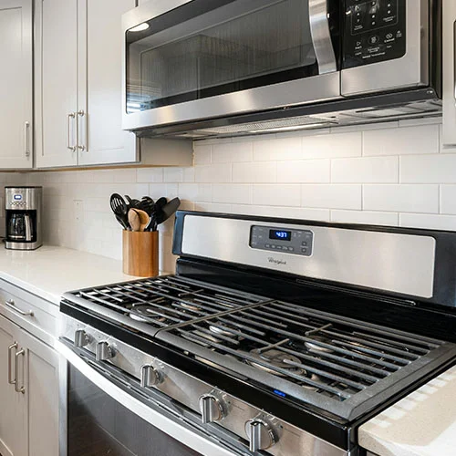
Finding a trusted, local appliance repair expert in Auburn shouldn’t be a hassle. That’s why we make it easy! When you call, you’ll be connected with an experienced technician who can diagnose and address a wide range of appliance issues. Whether it’s a simple fix or a more complex repair, a qualified pro will be available to assist you.
Service technicians stay up to date with the latest appliance technologies, ensuring they
can handle everything from standard home appliances to high-tech smart models. From noisy
fridges to washers that won’t spin, you can expect a professional approach to
problem-solving. Every repair is completed with precision and care to help prevent recurring
problems.
Whether your appliance needs a minor adjustment, a part replacement, or an extensive repair,
an experienced technician will take the time to properly inspect your unit, explain the
issue, and recommend the best course of action. That way, you can make an informed decision
without any surprises.
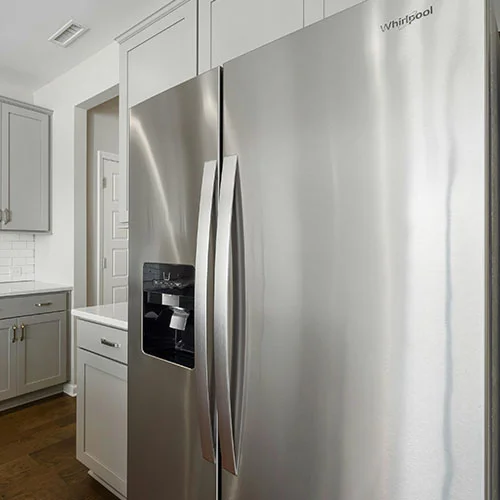
A broken appliance shouldn’t leave you stranded. Lots of Auburn appliance repair services don’t seem to understand that! That’s why same-day service is offered whenever scheduling allows. Oftentimes, repairs can be completed in a single visit, thanks to service trucks stocked with commonly needed parts.
Unexpected appliance failures can be disruptive, which is why getting a repair completed as soon as possible is crucial. The sooner an issue is diagnosed and fixed, the sooner you can return to your normal routine.
Having a fully functional home is important, and waiting days for a repair can be frustrating. That’s why all appliance repair companies prioritize fast response times to help ensure minimal downtime. If a technician is available in your area, same-day service may be an option, getting your appliance back in working order as quickly as possible.
Our Expertise
From kitchen essentials to laundry appliances, we ensure you’re connected with experienced Auburn technicians who specialize in repairs for all major household appliances.
Is your fridge not cooling properly? Whether it’s leaks, temperature fluctuations, or ice maker malfunctions, we’ll connect you with an expert who can diagnose and fix the issue. Refrigerators are essential for keeping your food fresh, and timely repairs can prevent costly grocery losses.
Cooking problems? From faulty ignitors to inconsistent heating, an over repair technician will restore your oven and stove’s functionality. A properly working stove and oven can enhance the efficiency of your kitchen and make meal preparation hassle-free. If your stove burners won’t ignite, your oven won’t heat evenly, or your control panel is malfunctioning, a professional stovetop repair technician can quickly pinpoint the issue and make the necessary repairs.
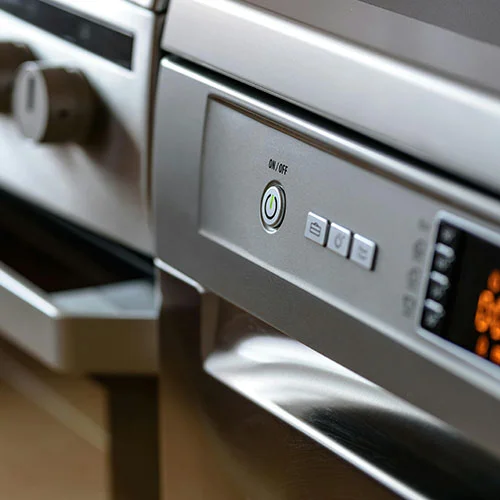
Tired of washing dishes by hand? If your dishwasher is leaking, failing to drain, or leaving dishes dirty, help is available. Dishwashers save time and energy, making a functional unit crucial for a smooth-running household. From clogged filters to malfunctioning spray arms, dishwasher repair technicians can diagnose and repair any issue to restore your dishwasher’s cleaning performance.
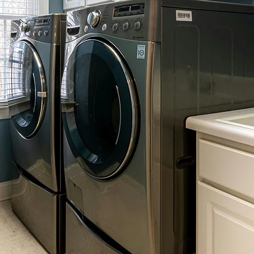
Laundry piling up? Whether your washer isn’t spinning or your dryer isn’t heating, skilled washing machine repair techs can help. A properly functioning washer and dryer can make laundry day stress-free, saving you time and money on laundromat visits. From loud noises and leaks to heating problems and electrical issues, a dryer repair expert can quickly restore your laundry room appliances to full working order.
Appliance Brands
Our network of appliance repair technicians are experienced in servicing all major brands and models. Whether you own a high-tech, smart appliance or a more traditional model, the right Auburn repair technician can diagnose and resolve your issue efficiently. Here are some of the top brands that can be repaired:
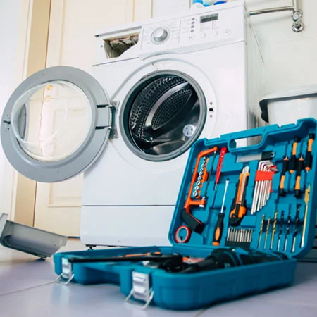
Known for their innovative appliances, Samsung refrigerators, dishwashers, and laundry machines require expert attention when they malfunction. From touch screen issues to cooling problems, technicians can troubleshoot and fix these modern machines.

Whirlpool is one of the most recognized appliance brands in the industry. If your Whirlpool washing machine isn’t draining, your oven won’t heat evenly, or your refrigerator is running too warm, skilled repair professionals are available to restore functionality.

General Electric appliances are built to last, but even the most durable machines can develop issues. Whether it’s a GE dishwasher that won’t start or an oven with inaccurate temperature settings, a trained technician can ensure proper repairs using manufacturer-approved parts.

Maytag appliances are designed for durability, but over time, wear and tear can lead to performance issues. If your Maytag dryer isn’t heating or your washer isn’t spinning, expert repair services can get your appliance back to optimal performance.
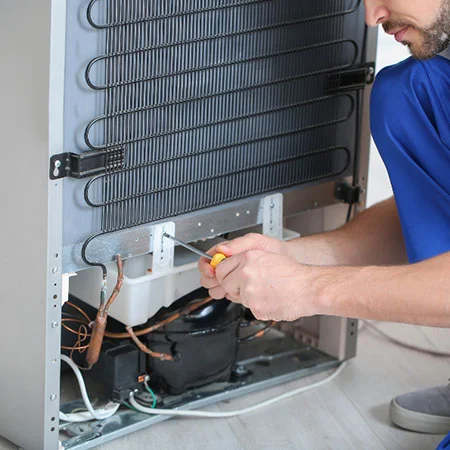
LG’s smart appliances require specialized knowledge for repairs, especially with high-tech refrigerators, washers, and dryers. If your LG appliance is displaying an error code, failing to function, or not performing as expected, an experienced technician can diagnose the issue quickly.

Kenmore appliances have been a staple in American households for decades. Whether you need Kenmore refrigerator repair, stove repair, or dryer maintenance, you can count on a knowledgeable service provider to handle the job efficiently.
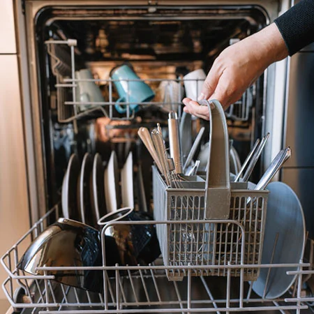
If your KitchenAid dishwasher won’t drain or your built-in refrigerator isn’t cooling properly, expert repair services can get your kitchen appliances back in working order.

Frigidaire refrigerators, ovens, and dishwashers are known for reliability, but when issues arise, having a professional repair service available can make all the difference in extending the life of your appliance.
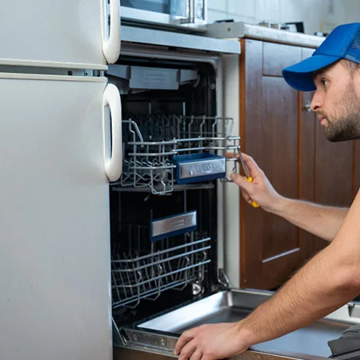
Bosch dishwashers and high-end kitchen appliances require specialized care. If your Bosch dishwasher isn’t cleaning properly or if your cooktop isn’t functioning, a qualified technician can restore full operation.
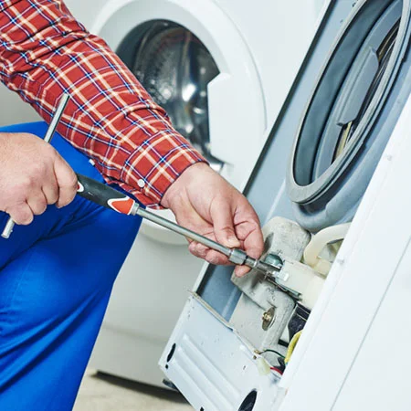
Amana appliances offer budget-friendly solutions, but even affordable models may need occasional repairs. Whether it’s an Amana washing machine that won’t spin or a refrigerator that’s leaking, the right technician can quickly troubleshoot and repair the issue.
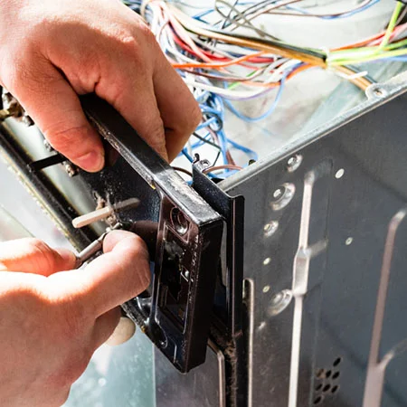
Viking appliances are known for their high-end design and performance, particularly in kitchens. If your Viking range, oven, or refrigerator isn’t working as it should, specialized repair services can restore it to peak condition.

Sub-Zero refrigerators are luxury appliances that require expert service when they malfunction. If your Sub-Zero fridge isn’t cooling or has a damaged seal, specialized repair professionals can provide solutions to extend its longevity.
Whether you own a common household brand or a luxury appliance, the right Auburn technician can ensure that your repair is handled efficiently and effectively. CallAuburn Appliance Repair Pros today to get connected with a specialist who can diagnose and repair your appliance issue.
INQUIRIES? CALL NOW (530) 447-8105Need an appliance repaired quickly? Let’s get you connected with a skilled technician right away. Call now and schedule your service with a trusted local appliance pro here in Auburn!
Don’t wait for the problem to get worse! A professional repair today can prevent expensive appliance replacements down the road. Get expert service when you need it the most.
Appliances are an essential part of everyday life, and when they break, it can be overwhelming. Instead of dealing with the inconvenience of a faulty appliance, let’s get you connected with a skilled technician that can diagnose the issue and provide a quick, reliable solution.